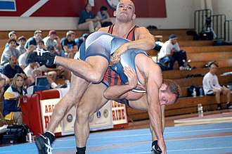

Kreeka-Rooma maadlus
Kreeka-Rooma maadlus (ka klassikaline maadlus ja Prantsuse maadlus) on üks kahest levinumast maadlusviisist. Erinevalt vabamaadlusest ei tohi võistlejad Kreeka-Rooma maadluses haarata teineteist altpoolt vöökohta.
Kreeka-Rooma maadlus

Maadluse üldised reeglid
- Võitmiseks on kolme vooru jooksul kaks võimalust:
- Kui 1 maadlejatest saavutab lahinguvoorude jooksul 8 punktilise edu
- Enamik maadlejaid üritab matsi võita seljavõiduga. See saavutatakse vastase õlgadest tihedalt kinni haarates ja 1-2 sekundiks matil kinnitades. Kohtunik ja kohtunikud teevad kindlaks, kas seljavõit on kehtiv. Kui seljavõit on saavutatud, siis võitlus lõpeb ja maadleja võidab heitluse.
- Hoidmine võõ alt on keelatud. See hõlmab vastase põlvede, puusade või jalgade haaramist.
- Samuti on keelatud tripid, jalalõgid ja põlved.
- Iga lahinguvoor on jagatud kolmeks osaks: üks 60-sekundiline segment neutraalseks lahinguks (jalgadel) ja kaks 30-sekundilist jada maavõitluseks (matil).
- 60 sekundi neutraalses segmendis kõige rohkem punkte saanud sportlasel on eelis maavõitluse ajal. Kui tipus olev sportlane ei saa punkte teenida, antakse tema allpool olevale vastasele punkt hea kaitse eest. Seejärel vahetavad maadlejad positsioone, et anda mõlemale sportlasele võimalus tipus punkte koguda.
- Kui ükski maadlejatest esimese neutraalse segmendi ajal skoori ei löö, keeravad kohtunikud mündi, et teha kindlaks, kes alustab maapealset võitlust ülevalt.
- Eesmärk on koguda iga segmendi jooksul võimalikult palju punkte, sest see annab maadlejale parimad võimalused punktidega võitmiseks, kui kukkumist ei õnnestu saavutada.
Võimalused kuidas saada punkte
| Viisid |
Maha võtmine |
Tagurdamine |
Kokkupuude |
Trahv |
Väljaspool lubatud piire |
| Punktid |
2-5p |
1p |
2-3p |
1-2p |
1p |
- Maadlejale antakse punkte mahavõtmise eest, kui maadleja saab neutraalsest asendist (kui maadleja on jalgadel) matil kontrolli oma vastase üle. Matil tuleb kontrollida vähemalt kolme kokkupuutepunkti (nt kaks kätt ja üks põlv; kaks põlve ja üks käsi või pea; või kaks kätt ja pea)
- Maadlejale antakse tagurdamise eest üks punkt, kui maadleja saab kaitsepositsioonilt vastase üle kontrolli (kui maadlejat kontrollib tema vastane).
- nimetatakse ka "ohupositsiooniks": Maadlejale antakse punkte kokkupuute eest, kui maadleja paljastab vastasele mitu sekundit matile selja. Punkte kokkupuute eest antakse ka siis, kui maadleja selg on matil, kuid maadleja pole kinnitatud.
- Aastatel 2004-2005 toimunud rahvusvaheliste stiilide muutuste korral saab maadleja, kelle vastane võtab vigastuste aja, ühe punkti, kui vigastatud maadleja ei veritse. Muud rikkumised (nt tr-mmilt või matilt põgenemine, vastase löömine, jõhkruse või vigastamise kavatsus ning ebaseaduslike kinnihoidmiste kasutamine) karistatakse kas ühe või kahe punkti
- Alati, kui maadleja paneb jala kaitsealale, peatatakse mats ja üks punkt antakse vastasele.
Kuidas võita
Kuidas võita?